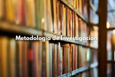
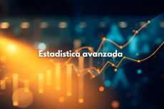
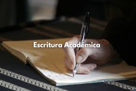
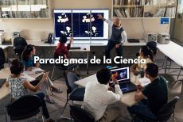
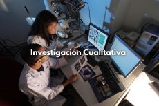
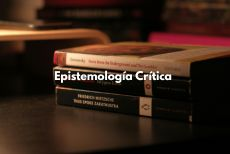
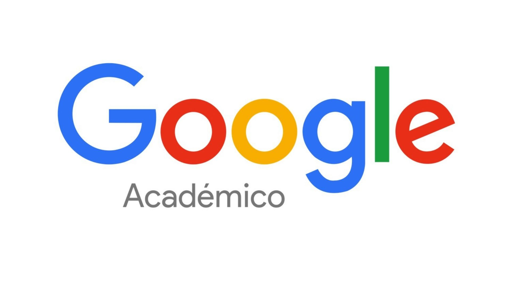

Metodología de Investigación
Fundamentos y técnicas para la investigación académica de posgrado.
Ver cursoPosgrado - Biblioteca Digital

Fundamentos y técnicas para la investigación académica de posgrado.
Ver curso
Modelos estadísticos multivariados y análisis de datos complejos.
Ver curso
Estrategias para redactar artículos, tesis y reportes científicos.
Ver curso
Kuhn, T. (1962). La Estructura de las Revoluciones Científicas.
Leer más
Hernández Sampieri et al. Metodología de la Investigación, 6a ed.
Leer más
Bourdieu, P. El oficio del científico: Ciencia de la ciencia y reflexividad.
Leer másGuia paso a paso para revisar literatura académica eficientemente.
Ver videoTutorial completo para organizar bibliografía y notas de lectura.
Ver videoConsejos prácticos para preparar y presentar la defensa doctoral.
Ver video
Busca artículos, tesis y libros académicos en Google Académico
EnlaceGuía en español para citar y armar tu lista de referencias con el formato APA
EnlaceGuía paso a paso para preparar y enviar tu tesis sin morir en el intento.
Enlace